zone generator: before
2026

sixteen tiles
It started with a Wang tile demo that confused me, because you painted the corners of tiles instead of switching tiles on and off. So I began with the simplest version: 16 tiles where each edge is one of two colours, and a grid to put them on. Each tile's number comes from its green edges (N 1, E 2, S 4, W 8), and touching edges have to match.

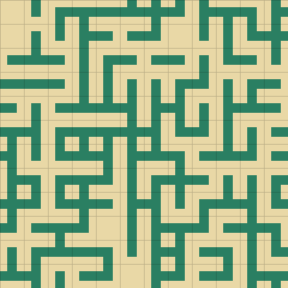
the seam
Placing a tile changed its neighbours to fit, and then a faint line showed up between every tile. I drew a red line on a screenshot to point at it. Each triangle was drawn on its own with a soft edge, so the background leaked through where two met. Filling every green triangle as one shape with no outline fixed it.

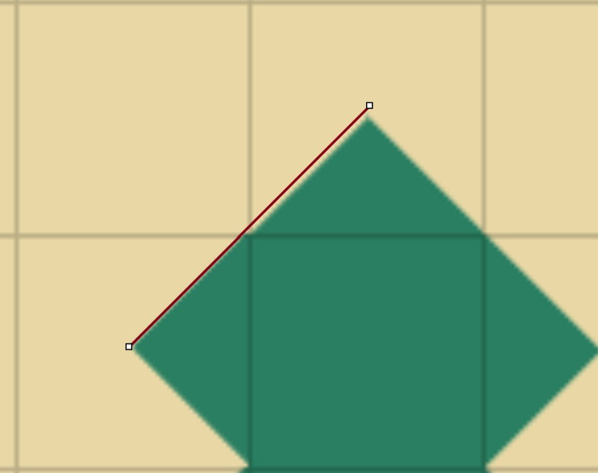
corners
Corners use the same maths, but a corner is shared by four tiles instead of two, so painting one changes four tiles at once. That was what the confusing demo had been doing.

512 tiles, 102 shapes
Then I wanted corners and edges on the same tile, still two colours, all adding up to one outline. Adding a centre pip made it nine slots and 512 tiles. Counting rotated and mirrored copies once brings that down to 102. With the centre pip, painting became painting pips: click any dot and every tile that shares it updates. From then on the pips were the real map, and tiles were just a way of looking at nine of them.
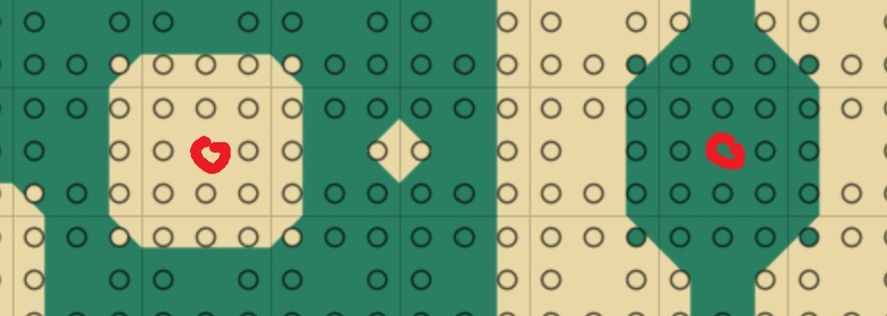
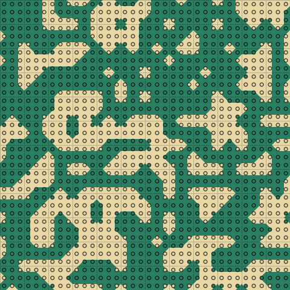
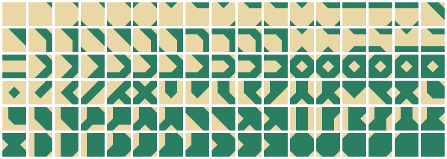
two wall pieces
I sketched where walls could go on the tiles, diagonals across corners and straight runs along edges, thinking ahead to 3D walls. It works like marching squares: wherever floor meets rock between four pips, a wall goes in. Only two shapes ever come up, a diagonal and a straight, so all 102 tiles are built from those two.
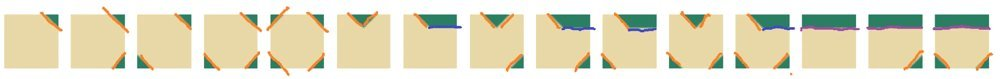
ideas for later
Two ideas got talked through and parked: areas of a set size dropped into the map that follow their own rules, and a height gradient under the walls for the floor. They came back as zones and ceilings.
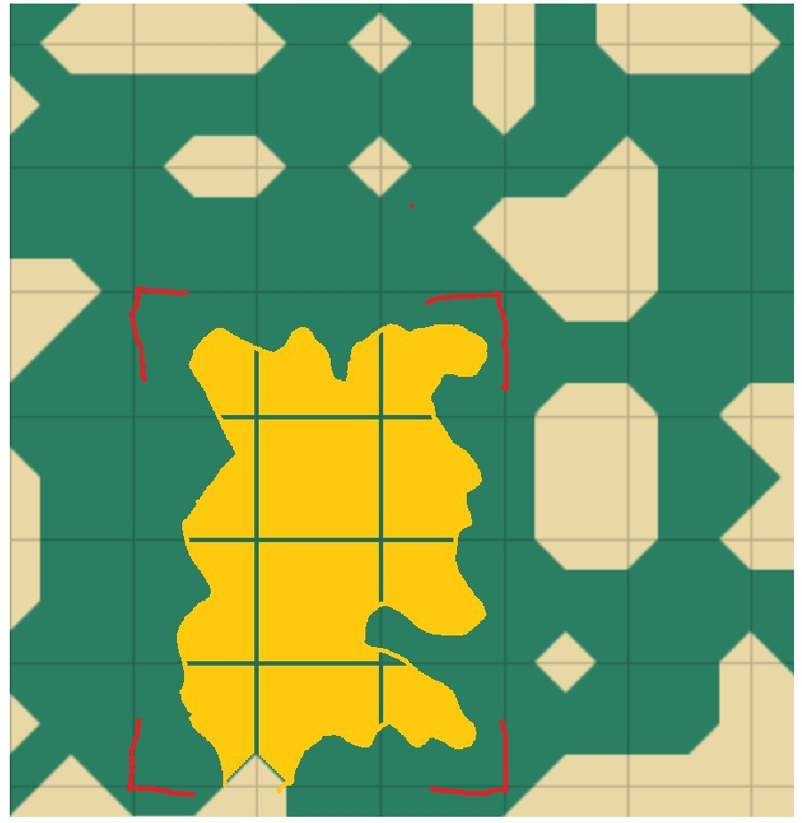
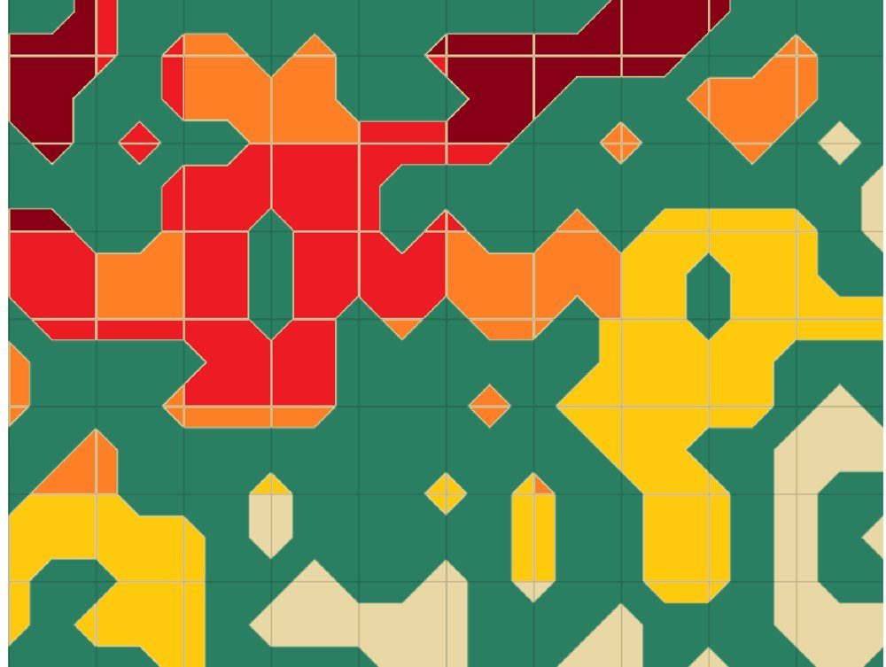
the room walker
After reading Boris the Brave's post on oatmeal and spice, I wanted something more interesting top-down before going 3D, and started a tiny new file from a sketch: map on the left, first-person view on the right. The map is a pip lattice, the walls come from the two pieces, and a raycaster draws them.

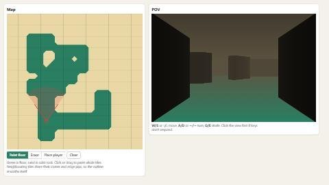
zones
Next the map was cut into 5×5 blocks using Boris's 53 irreducible 5×5 rectangle subdivisions, in any of 8 orientations. Each rectangle became a zone with a law: cave, chamber, hall, rooms or maze. A pip on a shared border is floor if either law wants floor, and a blend band mixes the laws near the borders.


The first maps were too spread out and full of single pillars. The world shrank to 40×40 tiles and the zones got smaller.
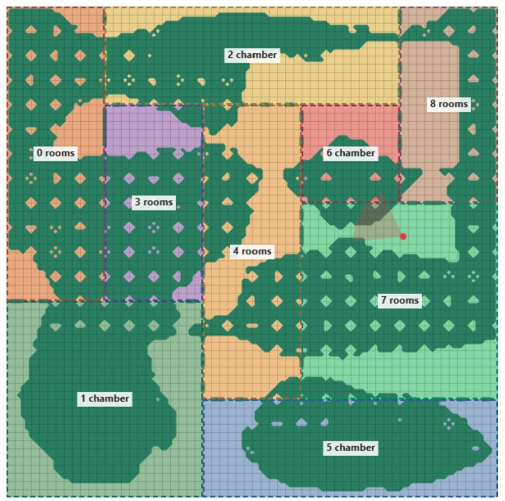

ceilings
The big rooms still felt flat, so the ceiling rises with how open a space is. Pillars count as walls, so they would have pulled the ceiling down. Small free-standing pieces of rock get sorted out as columns first and ignored. The first ceilings were choppy where they met the walls.

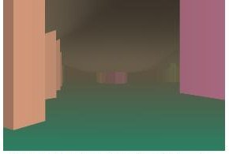
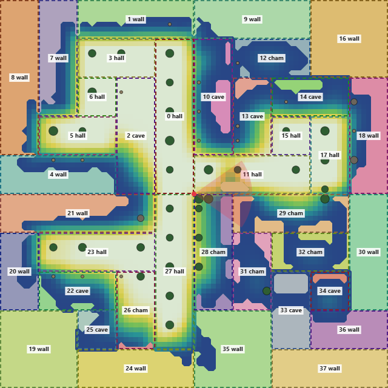
walls at the edges
The player was halved and the map doubled, mazes were cut, and every zone touching the edge became a wall zone so maps stopped looking square. Blending became one-way: wall zones take on their neighbours' character, but inner zones ignore walls.
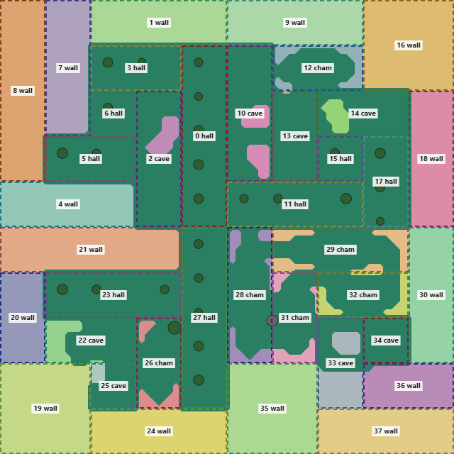
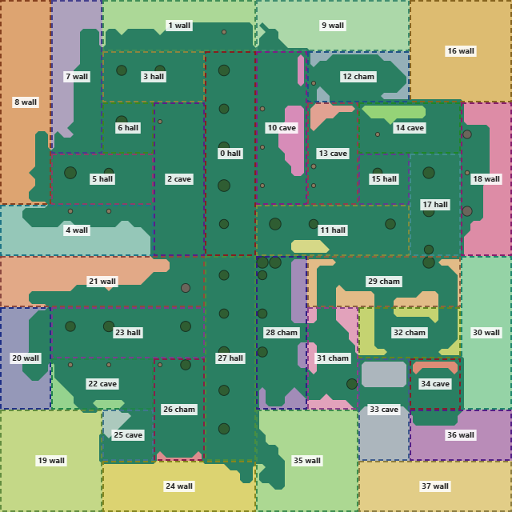
getting everywhere
Small cut-off pockets get filled in, every other separate region gets the cheapest tunnel dug to the main one, and loops are added the Brogue way, by opening thin walls where walking around is much longer than going through. A second panel draws the zone graph.

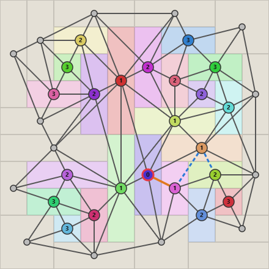
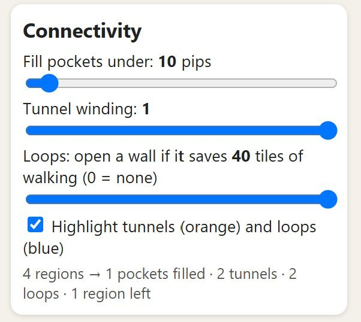
seeds and ratings
To fight the oatmeal, the blend band, connectivity, ceilings and map size all came from the seed. Then I rated 30 seeds, some with the zone colours turned off. Maps with chambers averaged 3.9 and maps without averaged 2.0. Cave and chamber together got 5.0, and hall with rooms got 1.2. Those numbers became the new odds.
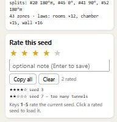
props
A fork took the new odds and turned the columns into props picked by the zone's law: stalagmites and boulders in caves, trees in halls and chambers, broken pillars in rooms. The first props were flat sprites. I didn't like them, so they became low-poly meshes with textures generated from noise, stripes and speckle.
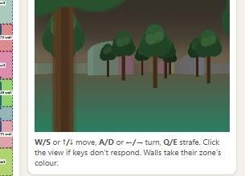
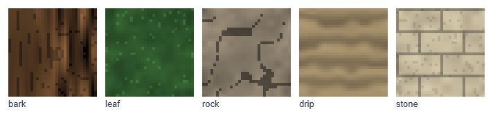
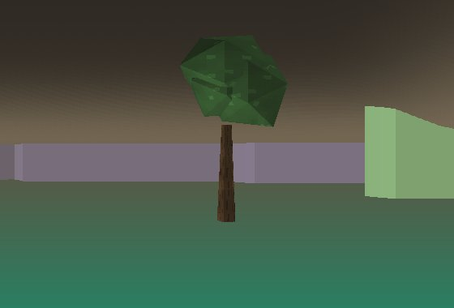
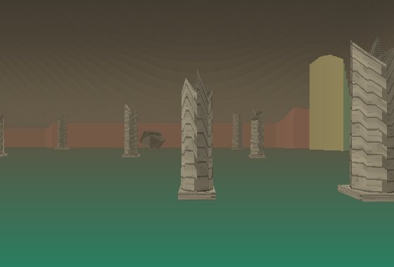


This is where the zone generator page picks up.
- javascript
- python
- claude
5×5 rectangle subdivisions by boris the brave